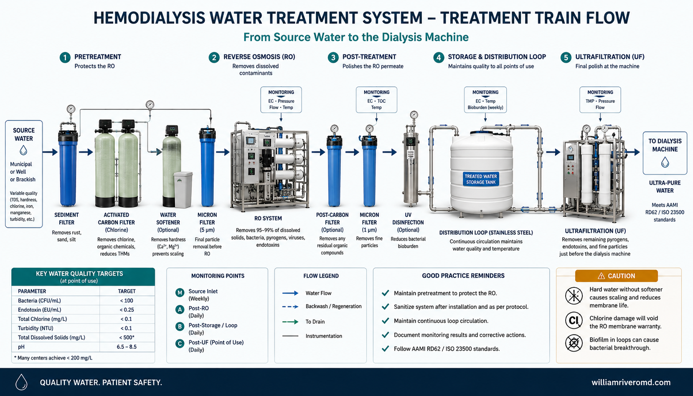
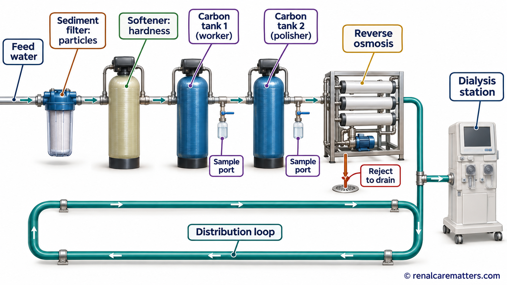
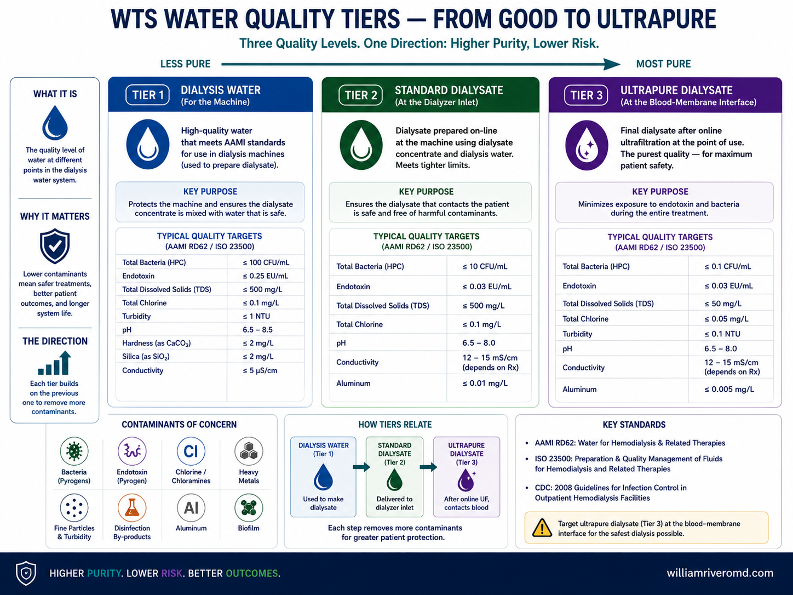
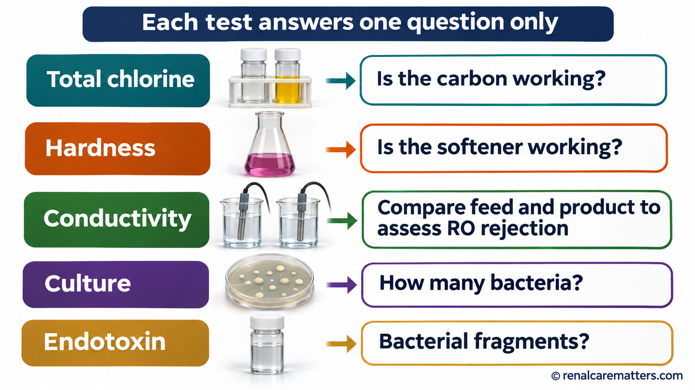
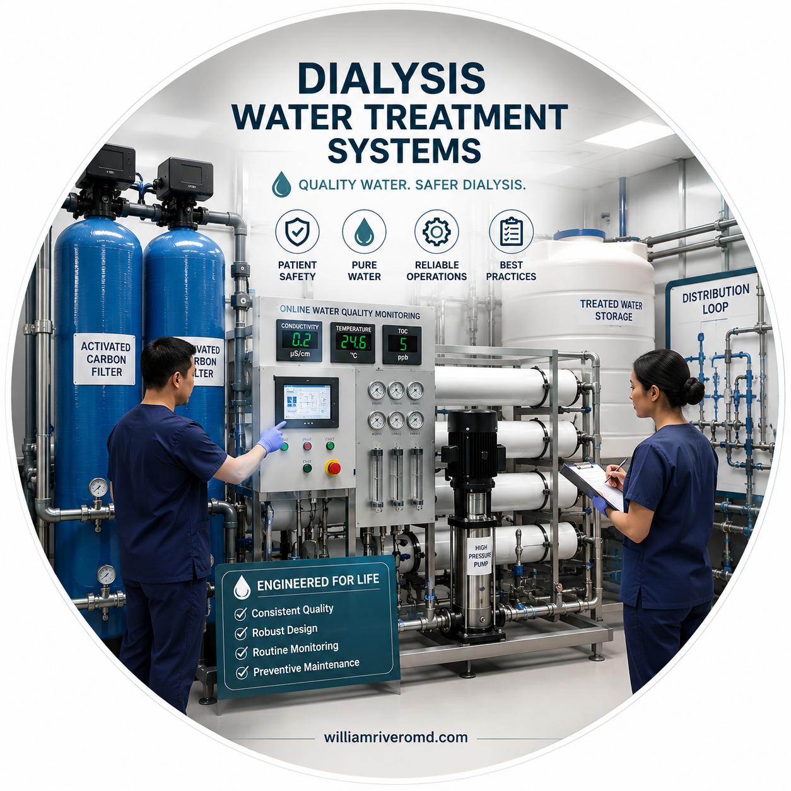
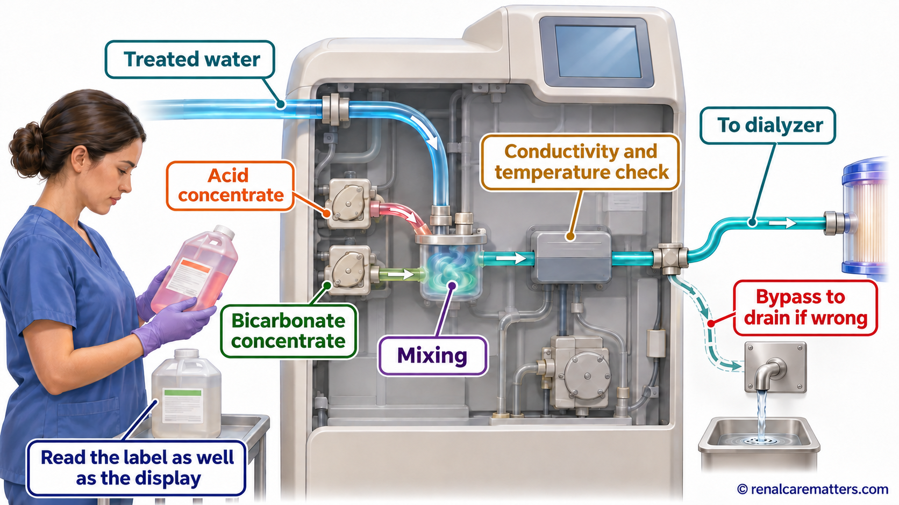
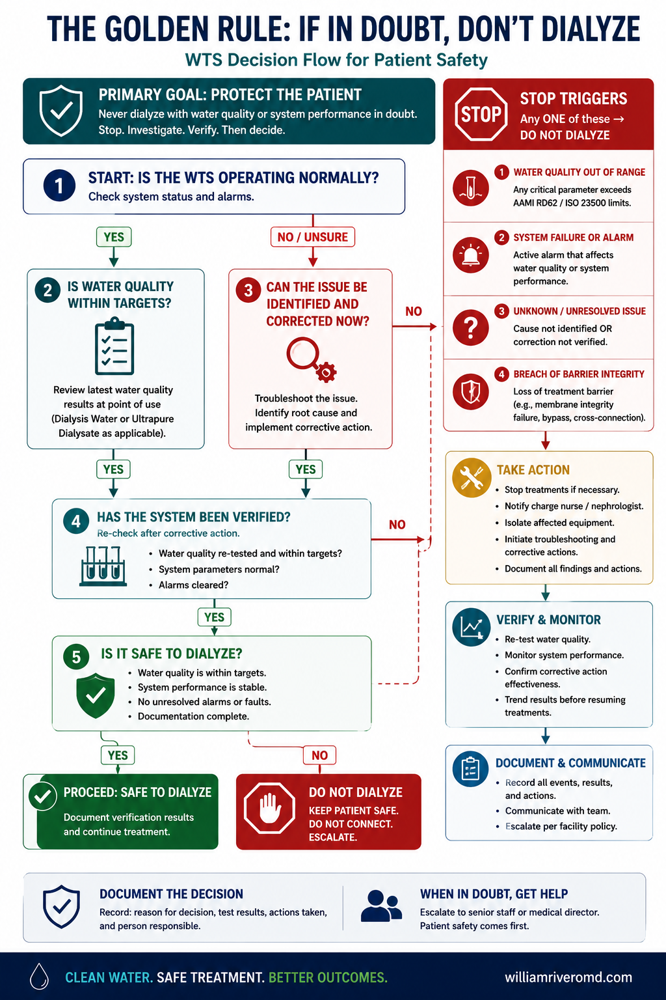

How tap water becomes dialysis water, which test checks what, how concentrates become dialysate, and how to respond to an out-of-range result.
PublishedNailathalaGipatikPepalwal:ReferencesMga SanggunianMga TinubdanReng Reperensya:6Audience: Entry-level dialysis technicians and trainees · preceptors, head nurses, and training providersRead timeOras ng pagbasaOras sa pagbasaOras ning pamamasa:
This module is study material for dialysis technicians. It explains why safe practice works the way it does. It does not replace the physician’s orders, the supervising nurse’s direction, your unit’s approved procedures, or the manufacturer’s instructions for use. What a technician may do differs between countries and between facilities, so do only the tasks you are trained, assigned, and signed off to do. Every case is fictional.
Learning objectives
After this module you should be able to
Follow the water from the incoming supply, through treatment and distribution, to the dialysis station.
Tell the water quality checks apart, and name the right sample point, method, and record for each.
Explain how concentrates become dialysate, and what the product identity, conductivity, and pH checks can and cannot prove.
Read a mock water log, hold the treatment starts that are affected, escalate the exception, and record the authorized release.
Classroom 6 hSkills lab 6 hSupervised placement 16 h
Pre-testBefore you read, answer the 5 self-assessment questions and note your score. After the module, select New set of questions and compare. The difference is what you learned; the questions you still miss are what to reread.
Start here
The big picture, in plain words
In plain wordsTap water is safe to drink but not safe for dialysis. A person drinks about 14 liters of water a week. A dialysis patient’s blood is exposed to more than 300 liters, with only a thin membrane in between. Chemicals that do no harm in a glass of water can destroy red blood cells in a dialyzer. The water room exists to remove them, and the daily checks exist to prove that it did.
The comparison with a drinking glass has a limit. Water that looks and tastes clean in a glass usually is. Water for dialysis can be perfectly clear and still carry chloramine, endotoxin, or dissolved salts. Only a test shows what is in it, and only a recorded result proves that the test was done.

Figure 1. The water treatment train. Each stage removes something different, and each stage protects the one after it.
Figure 2 · Key terms for this module
Feed waterThe water that comes into the unit from the city supply or a well.
Carbon tankA tank of activated carbon that removes chlorine and chloramine.
ChloramineA disinfectant added to city water. In dialysis it damages red blood cells.
BreakthroughWhen a chemical gets past a treatment stage that should have removed it.
Reverse osmosisForcing water through a very fine membrane that holds back most dissolved salts, bacteria, and endotoxin.
EndotoxinA fragment of dead bacteria. It can cause fever and chills even when no live bacteria are present.
ConcentrateA strong salt solution that the machine dilutes with treated water to make dialysate.
Opening case · fictional
Case: First-shift total chlorine result
It is Tuesday, a little before 06:00. The technician on duty, Mr. Paolo Santiago, 26, has just read the total chlorine test at the water system’s designated routine sample point. The log shows the result above the action level for that point. The result recorded on the previous shift was acceptable. A few minutes earlier he noted that the RO product water display was within its usual range. No patient has arrived, and every dialysis station is still empty. The charge nurse, Ms. Liza Domingo, asks whether the first patients can be set up.
Before reading on, decide:
What do you do before any patient starts treatment?
Does the normal RO display tell you anything about the chlorine result?
What goes into your report, and who may release the system?
Keep your answers in mind. The lesson gives you what you need, and the case review near the end shows one sound response.
Lesson · part 1
From incoming water to the station
Think of the water system as the kitchen of a busy carinderia. Ingredients arrive from the market, then pass through washing, cutting, and cooking, one stage after another, before they reach the plate. Each stage removes a different problem, and a problem missed at one stage is not fixed by the next. The picture has a limit. A cook can taste the food before it is served. You cannot judge dialysis water by looking at it, so the only way to know is the right check at the right point.
Dialysis uses treated water to prepare dialysate. Contaminants in that water can enter the dialysate pathway and harm patients. Your facility uses a series of treatment and monitoring steps chosen for its own source water and equipment. Walk the actual installation with the designated water-system lead, so that the diagram below becomes pipes and ports you can point to.1,2

Figure 3. Simplified water pathway. The table provides a text equivalent. Sample locations and component order vary by installation.
Stage
Typical role
Incoming water and pretreatment
The facility evaluates the water it receives. Filters remove particles. A softener, where one is used, reduces hardness.
Activated carbon
Reduces the chlorine and chloramine used to disinfect the public supply. Some systems have two carbon stages, with designated sample ports that detect breakthrough and guide the response. Breakthrough means the measured disinfectant has passed a treatment stage at a level that calls for action.
Reverse osmosis (RO)
A membrane under pressure splits the water into a rejected stream and product water, and reduces many dissolved impurities. The facility watches RO performance and water quality with several different checks.
Product water distribution
A distribution loop carries the treated water to the stations. The design may include storage or further treatment. The unit follows a validated disinfection and monitoring program for its own loop.
Station
The dialysis machine mixes treated water with compatible concentrates to make dialysate. Water quality checks and final dialysate checks look at different points in this process.
RememberEach stage protects the next one. Carbon protects the reverse osmosis membrane from chlorine, and the softener protects it from scale. A check skipped upstream becomes a failure downstream.
Lesson · part 2
Match the quality check to its purpose

Figure 4. Three purity levels. The limits for bacteria and endotoxin get stricter as the fluid gets closer to the patient’s blood.
Each check answers one question about one place in the system. The most common mistake is to use the answer to one question as if it answered another.
Check
What the check tells you
How to use it within your assigned scope
Total chlorine
Measures free chlorine plus combined chlorine, which includes chloramines. A high result can mean breakthrough in the carbon stage.
Use the designated sample point, method, timing, and action level. Write the actual result and its units.
Hardness where applicable
Helps you follow softener performance at a designated point.
Use the approved kit and compare the result with the local trigger that applies.
RO product water conductivity or related performance reading
Helps you detect a change in dissolved ions or in RO performance.
Compare with the installation’s settings and with the trend. This reading cannot replace total chlorine testing, and it cannot detect every contaminant.
Laboratory chemical analysis
Measures specified chemical contaminants under the facility’s monitoring plan and the requirements that apply.
Confirm sampling, labeling, transport, and routing with the authorized team.
Microbiological culture and endotoxin testing
Culture estimates the number of living organisms by a specified method. Endotoxin testing looks for bacterial endotoxin, which is not the same thing as a count of living organisms.
Follow the sampling plan, the exact point and method, and the laboratory’s instructions. Send results and trends to the designated lead.
Your facility sets its current sampling schedule, action levels, and maximum limits from the applicable Philippine requirements, locally adopted standards, the design of its system, and verified instructions. An action level is a trigger for a defined response, set so that the response starts before, or at the moment, a safety boundary is reached. Apply each requirement at its own test location. A reading from a different port, a different unit, or another shift cannot clear the exception in front of you. Centers for Disease Control and Prevention (CDC) and U.S. Centers for Medicare & Medicaid Services (CMS) examples are useful for comparison, but the facility decides which standards govern local practice.1,2,3
Before an assigned test, confirm the sampling point, the timing, the kit or meter and its expiry, calibration or quality control where it applies, and the reporting units. Take the sample by the approved method at the required time. Log the date and time, sample location, system ID, result, the limit or trigger that applies, your name, and any action taken. If a required result is missing or you doubt it, ask the water lead how to proceed. Do not assume the system is ready.

Figure 5. Which test answers which question. Five water tests, each paired with the one question it answers.
Lesson · in practice
Reading the daily water log, line by line
In plain wordsThink of the water log as the weight chart a barangay health worker keeps for a growing child. One visit tells you whether the child is well today. A line of visits tells you whether the child is slowly falling behind, long before anyone looks sick. Each line of the water log is one visit for one part of the system.
The picture has a limit. A health worker who sees a problem refers the child; she does not treat the child herself. Your position is the same. You do not repair the water system. Your work is to read each line, know what it protects, and know when to stop and report.

Figure 6. Readings are taken at the equipment, at the same points and in the same order every day.
Log line
What it means
Out of range when
Incoming water pressure
Whether the building is supplying enough water to the system
Below the minimum on your log sheet
Pressure before and after each filter
The difference between the two gauges shows how clogged the filter has become
The difference grows past the limit on your log sheet, or changes suddenly from yesterday
Softener: hardness after the softener
Whether calcium and magnesium are being removed, which protects the reverse osmosis membrane downstream
Above the limit on your log sheet, commonly 1 grain per gallon (about 17 mg/L)
Softener: salt level and timer
The softener cleans itself with salt water at a set hour, when no treatment is running
Salt low or formed into a hard crust; timer showing the wrong time of day after a power interruption
Total chlorine after the carbon tanks
Whether the carbon is still removing chlorine and chloramine
Above 0.1 mg/L, or above your unit’s lower action level
Reverse osmosis (RO): product water conductivity and percent rejection
How much dissolved salt the membrane is taking out
Conductivity above, or rejection below, the alarm setting on your log sheet; rejection is commonly expected to be 90 percent or more
RO: pressures and product flow
Whether the membrane is producing enough water
Outside the range on your log sheet, or drifting away from the usual values
Bacteria and endotoxin results (from the laboratory, commonly monthly)
Bacteria are counted as colonies (CFU). Endotoxin is a fragment of dead bacteria that causes fever
Dialysis water limits: bacteria below 100 CFU/mL and endotoxin below 0.25 endotoxin unit (EU)/mL, with action commonly taken at half of each
The chlorine, bacteria, and endotoxin figures are the widely used international limits.4 For every other line, use the limit printed on your log sheet. It was set for your own system, and a number from another unit does not apply.
Figure 7 · Good logging habits
Write the numberRecord the actual reading and its unit. A tick or the word OK tells the next reader nothing.
Read the trendCompare today with the last several days. A reading that is still in range but moving steadily in one direction is worth reporting.
Never copy yesterdayAn entry that was not measured is a false record, however likely the number.
Blank is not normalA reading you missed is reported, not left empty for someone else to notice.
Stop and reportReport to the nurse and the water technician, before patients start, any reading outside its limit, any reading you could not take, and any alarm on the water system. You do not adjust, bypass, or reset water equipment unless you have been trained and assigned to do so.
Lesson · in practice
Doing the total chlorine and hardness tests correctly
City water carries chlorine and chloramine so that it is safe to drink, and the amount changes from day to day without notice. The carbon tanks take them out. Carbon gives no sign when it is used up: the water looks, smells, and flows the same. The test is the only warning you get. That is why it is done before each patient shift, or as often as your unit’s policy states.
Figure 8 · Total chlorine test
Run the systemWater must have flowed through the carbon tanks for at least 15 minutes, so that the sample shows working conditions.
Check the kitIt must be a total chlorine test that can read 0.1 mg/L, in date, with the correct reagent.
Go to the right portThe sample port after the first carbon tank, or the one your procedure names. Read the port label before you open it.
Flush the portLet the water run briefly, then rinse the sample vial with that same water.
Fill exactlyUp to the mark on the vial, no more and no less.
Add reagent and time itMix as the kit instructs and wait the exact reaction time. Use a timer, not a guess.
Read at onceAgainst the color chart or on the meter, in good light.
RecordThe time, the port, the result with its unit, the kit lot, and your name.
ActIf the result is above the limit, follow the next lesson and Section 4.
Common error
Result
Prevention
Using a free chlorine reagent or strip
Chloramine is missed, so the test reads falsely low
The label must say total chlorine
Sampling just after start-up
Water that sat in the carbon overnight reads lower than water that is flowing
Run for 15 minutes first
Reading too early or too late
The color has not developed yet, or has faded or darkened
Time the reaction exactly as the kit states
Expired or damp reagent or strips
The color cannot be trusted
Check the dates; keep containers closed and dry
Dirty vial or wrong sample volume
A false high or a false low
Rinse with sample water; fill to the mark
Wrong sample port
The result describes a different part of the system
Match the port label to the log line
Writing “0” when no color is seen
The kit cannot prove zero
Record the result as below the lowest value the kit can read
Hardness after the softener. Hardness means dissolved calcium and magnesium. A softener works like a sponge: it holds only so much before it must be wrung out, which for a softener means cleaning itself with salt water. So the test is commonly done at the end of the treatment day, when the softener is most used up and a failure is most likely to show.
Figure 9 · Hardness test
SampleFrom the port after the softener, with the water flowing.
TestUse the unit’s kit exactly as written, whether it is a strip or a drop-count test.
CompareWith the limit on the log sheet.
Look at the salt tankSalt should be present, and not set into a hard crust with a hollow space underneath.
Record and reportA result above the limit goes to the water technician the same day.
RememberA careless test is worse than no test, because it produces a number that reassures everyone. If you doubt a result, repeat it with a fresh sample and say so in the log.
Lesson · part 3
Verify concentrates and dialysate separately
The machine combines treated dialysis water with compatible concentrate products. Conventional bicarbonate hemodialysis usually uses an acid concentrate and a bicarbonate source. Product families and mixing ratios differ. Check the product identity, formulation, expiry, compatibility, and the authorized prescription through the facility’s verification process. Confirm that the intended concentrate supply is connected, using the applicable instructions for use (IFU).5,6
Each check below covers a different risk, so a pass on one does not stand in for another.
Verification
What it addresses
Concentrate identity and proportioning
Confirms that the products are compatible with the machine and match the authorized formulation. Read the labels and complete any independent verification the facility’s process requires.
Dialysate conductivity
Measures how well the fluid conducts electricity, which depends on its dissolved ions. It helps you catch a proportioning problem. A normal value does not prove the intended potassium or calcium formulation, and it says nothing about water quality.
Dialysate pH
Checks acidity or alkalinity. Use the approved measurement method, with independent verification when the IFU and facility policy require it.
Water system release
Confirms that the water system has passed the facility’s required checks. A machine’s dialysate display cannot clear a water quality exception upstream.
Worked example. A machine shows an acceptable dialysate conductivity, but the concentrate label does not match the authorized formulation. The practical point is that conductivity cannot see the difference. Hold that machine’s setup, keep what is needed to identify the product, and report the discrepancy. Use the approved verification process for a replacement product, and repeat the required machine checks before the station is released.6
Figure 10 · Acid and bicarbonate concentrates
Acid concentrateSupplies most of the salts, including potassium and calcium. Different formulas exist, and the label must match the order.
Bicarbonate concentrateSupplies the buffer that corrects acid in the blood. Once mixed, it supports bacterial growth, so its use time is short.
The machine mixesOne part of each concentrate with many parts of treated water, in a fixed ratio for that machine.

Figure 11. How the machine makes dialysate. Treated water and two concentrates mixing inside the machine, with a conductivity check before the dialyzer.
Lesson · in practice
Acid and bicarbonate concentrates: handling them safely
Think of the machine as a cook following a fixed recipe: so many parts water, so many parts of each concentrate, every minute of the session. It does not taste the result. The machine builds dialysate from three streams: treated water, acid concentrate, and bicarbonate concentrate. Despite its name, the acid concentrate carries most of the salts, including the potassium and calcium that differ from patient to patient. The bicarbonate concentrate is the buffer, the part that corrects acid in the blood.
The practical point is that the machine trusts whatever container it is given. The checks on the label are yours.
Check on the acid container
Why
The potassium and calcium values on the label equal the prescription
These are the values that most often differ between patients, and conductivity cannot detect the difference
The mixing ratio family on the label matches the machine’s setting and the bicarbonate product
Concentrates are made for particular proportioning ratios; a mismatch produces the wrong dialysate
Expiry date, intact seal, clear fluid with no crystals
Damaged or old product may not have the composition on the label
Read the words, not the cap or jug color
Color schemes differ between manufacturers
Figure 12 · Mixing bicarbonate from powder
PrepareHand hygiene and gloves. Use a container that has been cleaned and is dry.
Check the powderThe correct product for the machine, in date, with the bag intact and dry.
Add treated waterDialysis water only, never tap water, up to the volume mark the product states.
Add all the powderOne full bag to its stated volume. Never part of a bag.
Mix gentlyUntil the powder is fully dissolved and the solution is clear, as the instructions state. Do not shake hard or mix longer than directed.
LabelThe date and time mixed, your initials, and the discard time.
Use in timeWithin the limit the manufacturer and unit policy state.
Rule
Reason
Never top up a partly used container with fresh solution
Bacteria from the old solution seed the new batch, and the mixing time on the label is no longer true
Discard mixed bicarbonate at its time limit
Bicarbonate solution has no preservative, and bacteria grow in it readily
Do not over-mix, and keep containers capped
Bicarbonate loses carbon dioxide to the air, which changes its pH
Rinse containers with treated water, disinfect them on the unit’s schedule, and store them upside down to dry
A wet container left standing grows a film of bacteria
Keep pick-up wands off the floor and wipe them at turnover
The wand goes straight into the fluid
Never pour acid and bicarbonate concentrates together
They react and form a hard white scale
Stop and reportDo not use a container that is unlabeled, past its time, or cloudy, or that has undissolved powder in it. Set it aside, tell the nurse, and prepare a fresh one.
Lesson · part 4
Hold, escalate and document water system exceptions

Figure 13. When a water result is out of range, the first move is always the same: stop, hold affected treatments, and report.
Does the normal RO display help? No. The RO display and the satisfactory result from the earlier shift describe other points and other times. Neither establishes readiness for this shift. Follow the approved response for that sample point, which may include authorized testing of backup components, confirmation testing, and corrective action.
Who releases the system? The designated authority documents the decision to release, to keep holding, or to put the unit contingency plan into effect. If anyone is already on treatment, activate the unit’s emergency pathway at once so that the clinical team can act.1,3
Mock log entry
Interpretation
Prior shift · Routine carbon check · Within the trigger
History. Keep it for the trend.
05:40 · RO product water display · Within the usual range
Useful for watching the RO. It does not answer a question about the carbon stage.
05:45 · Designated routine carbon sample · Total chlorine above the action level
Hold the affected starts and notify. Check the approved process for that sample point.
05:48 · Corrective action and authorized release · Pending
The affected system stays on hold until the designated lead documents a decision.
Stop and reportA total chlorine result above the unit’s limit means that no new treatment starts on that water until an authorized person releases it. A second test that looks better does not cancel the first.
Lesson · in practice
What patients experience when water or dialysate is wrong
In plain wordsPicture a fiesta where every guest eats from the same pot of adobo. One guest with a stomachache may have eaten something at home. Five guests sick within the same hour point to the pot. On a dialysis shift every patient shares the same water, so several patients with the same complaint within minutes of each other point to the water or the dialysate until proven otherwise.
The picture has a limit. At a fiesta the pot can wait until everyone has gone home. On a shift the patients are still connected, so the pattern has to be spoken the moment you see it. The technician walking the floor is often the first person in a position to see it.
Problem
What it does
Signs, often in several patients
Technician’s first action
Chloramine or chlorine passing the carbon
Damages red blood cells so that they burst, which is called hemolysis
Chest or back pain, shortness of breath, nausea, falling blood pressure; blood in the lines may look darker or a clear cherry red. Over weeks, anemia worsens across the unit
Call the nurse at once and say that more than one patient is affected. Check when the last chlorine test was done
Dialysate too dilute (low conductivity)
Water moves into red cells; hemolysis
Cramps, headache, nausea, low blood pressure, and the signs of hemolysis above
Call the nurse. Report the conductivity reading and any alarm. Check the concentrate containers and wands
Dialysate too concentrated (high conductivity)
Too much salt enters the patient
Intense thirst, headache, rising blood pressure
Call the nurse. Report the reading. Do not reset the alarm to keep going
Bacteria or endotoxin in water, concentrate, or dialysate
Endotoxin sets off a fever reaction
Shaking chills and fever, commonly starting in the first hour or two, with muscle aches, nausea, or low blood pressure
Call the nurse. Note which stations, which bicarbonate batch, and the time each patient started
Hard water (softener failure with poor RO performance)
Too much calcium and magnesium reach the patient
Nausea, vomiting, headache, weakness, high blood pressure
Call the nurse. Check the latest hardness and RO readings on the log
Dialysate too hot
Heat damages red cells
Feeling hot, flushed, signs of hemolysis
Call the nurse. Report the temperature on the display
The nurse and the nephrologist decide whether treatments stop and what care each patient needs. Your part is to keep the evidence. Do not discard anything that may help find the cause: keep the concentrate containers, note the lot numbers, and leave the machines as they are unless the nurse directs otherwise.
RememberSay the pattern out loud: “Station 4 and Station 7 both have chills, and both started at 6:10.” One sentence that links two patients can protect everyone else on the shift.
Lesson · in practice
Worked scenario: a failed chlorine test at shift start
Section 4 gives the rule: hold, notify, and wait for release. This fictional example puts numbers and words on that rule. Many systems have two carbon tanks in a row. The first does most of the work, and the second is the backup, like a second lock on a door. The exact response belongs to your unit’s written procedure; what follows is a common pattern.
Time
What happens
What it means
05:10
The water system is started
The 15-minute run begins
05:30
Total chlorine after the first carbon tank reads 0.3 mg/L. The limit is 0.1 mg/L
Three times the limit. The first tank is letting chlorine through
05:32
The technician tells the charge nurse and asks that no patient be connected
The hold starts now, before any further testing
05:35
As the procedure directs, the test is repeated with a fresh sample, and a sample is taken after the second tank. Results: first tank 0.3 mg/L again; second tank below 0.1 mg/L
The reading is real, and the backup tank is still protecting the water
05:40
The technician reports to the water technician and the charge nurse
The people with authority decide
Figure 14 · The report, word for word
Situation“Total chlorine after the first carbon tank is 0.3 milligrams per liter at 05:30. Our limit is 0.1.”
Confirmation“I repeated it at 05:35 with a fresh sample and it is again 0.3. After the second tank it reads below 0.1.”
Status“The system ran 15 minutes before sampling. No patient is connected. I have asked the charge nurse to hold all starts.”
Request“Please tell me whether we may start, and what testing you want during the shift. I will record your decision and the time.”
Notice what the report contains: the number and the limit, proof that the number is real, the state of the unit, and a clear request. In many procedures, a result within the limit after the second tank allows treatment to go ahead with more frequent testing while the first tank is serviced. That decision belongs to the person your unit authorizes, not to the technician who ran the test.
If the second tank had also read above 0.1 mg/L: no treatment starts on that water, the hold continues, and the unit follows its contingency plan. If patients were already on treatment when a high result was found, the technician tells the nurse at once, and the nurse acts for the patients.
Stop and reportThree things are never acceptable: starting patients “while we wait for the call back,” repeating the test until a passing number appears, and recording a result that was not measured.
On the floor
Real situations: problems and solutions
These are fictional but typical. For each one, cover the answer, decide what you would do, then compare. Where a step depends on local rules, your unit’s procedure and your supervisor’s direction come first.
Chlorine just detectable
What you see
At 05:30, the morning total chlorine test after the first carbon tank shows a faint color, below the limit. Last week the same test showed none.
What is likely going on
The first tank may be nearing exhaustion, or the city may have raised its dose.
What to do
Record the number, test after the second tank, and report the change even though the result is within the limit.
Why it matters
Catching the trend lets the carbon be replaced before chlorine reaches a patient.
Bicarbonate from yesterday
What you see
While preparing for the morning shift, you find a mixed bicarbonate container labeled with yesterday’s date.
What is likely going on
Mixed bicarbonate supports bacterial growth, and it loses strength over time.
What to do
Do not use it. Discard it by the unit’s method, tell the nurse, and prepare a fresh batch.
Why it matters
Old bicarbonate risks contaminated dialysate and a wrong mix.
Two acid formulas, similar jugs
What you see
On the concentrate shelf, two acid concentrates with different potassium levels sit side by side in nearly identical containers.
What is likely going on
This arrangement invites someone to connect the wrong one.
What to do
Read the full label against the order every time. Tell the nurse that the way they are stored makes a mix-up likely.
Why it matters
Conductivity will look normal with either formula. Only the label tells them apart.
Reverse osmosis alarm mid-shift
What you see
At 10:40, with patients on dialysis, the water room alarm sounds for high product conductivity.
What is likely going on
The membrane may be failing, or the feed water may have changed. The quality of the water is now in doubt.
What to do
Tell the charge nurse immediately, and state which stations are running. Hold new starts. Do not reset the alarm and walk away.
Why it matters
The nurse and physician decide what happens to the patients already connected. They can decide only if they know now.
Field notes
A normal machine display does not prove the water is safe. Water checks and machine checks answer different questions.
Use a total chlorine test, not a free chlorine test. Only total chlorine detects chloramine.
Write the number, not a tick.
If the softener clock is wrong after a power outage, tell the water technician before the shift starts.
Case review
Back to the case: First-shift total chlorine result
Case debrief.What to do before any patient starts. Hold the affected treatment starts while the result is assessed. Mr. Santiago’s first words go to the supervising nurse and the designated water-system or biomedical lead, through the facility’s escalation procedure. He reports the actual total chlorine result, the units, the time, the sample point, the system ID, which stations may be affected, and whether anyone is already on treatment.
Example handoff. “The 05:45 total chlorine result at the designated carbon sample point is above the action level. The value, units, and point ID are in the water log. We have held first-shift starts on the affected system. No treatment has begun. The water lead and the charge nurse have been told. Release is pending.” Notice what the report contains: the number, where it was taken, what is on hold, who knows, and what is still open. During simulation, ask where the release decision and the notifications are entered.
Skills lab · with your preceptor
Skills checklist: Simulated water log and exception response
Materials: Training diagram, mock system flow map, kit label or instructions, water log, mock concentrate labels, and a failed-result scenario. Rate each step satisfactory, needs practice, or not observed. Your preceptor rates each step as satisfactory, needs practice, or not observed. Steps marked Critical must all be satisfactory before sign-off. This checklist supports supervised learning; your unit’s own procedure and competency form are the authority. A printable version of every checklist is on the trainer page.
Traces feed water, pretreatment, carbon, RO, distribution and the station.
Identifies the sample point and explains why that location matters.
Confirms assigned method, kit or meter status, timing, units and local trigger.
Separates total chlorine, RO monitoring, culture and endotoxin testing by purpose.
Distinguishes concentrate identity, finished dialysate conductivity and pH.
CriticalHolds affected treatment starts and promptly reports the out-of-range result.
Gives a complete handoff, including which systems or stations may be affected and patient connection status.
CriticalExplains why an acceptable RO display or repeat result alone does not authorize release.
Records the result, notifications, corrective action status and designated authority’s decision in the mock log.
CriticalPerforms a total chlorine test on a training sample: confirms run time, kit type and expiry, sample port, fill volume, and timed reaction, and records the result with its unit.
Mixes a batch of bicarbonate on a training setup with treated water, a full bag, and gentle mixing, and labels the container with date, time, initials, and discard time.
CriticalReports a simulated failed chlorine test using situation, confirmation, status, and request, with exact values and times.
Placement activity. Walk the actual treatment and distribution path with the designated lead. Find one routine sample point and one point used for other surveillance, and explain which water quality question each one answers. Log the activity and your level of supervision, using approved de-identified information.
Self-assessment
Check your understanding
Each visit draws 5 questions at random from this module’s 22-question bank. Choose the single best answer for each, then select Check answers; an explanation appears under the best answer. Select New set of questions for a different mix. A good target is 4 of 5 on two different sets. Nothing you select is sent anywhere; scoring happens in your browser.
International Organization for Standardization (ISO). (2024). Preparation and quality management of fluids for haemodialysis and related therapies. Part 3: Water for haemodialysis and related therapies (ISO 23500-3:2024).
Educational study material for dialysis technicians. It does not replace physician orders, the supervising nurse’s direction, approved unit procedures, manufacturer instructions, DOH licensing requirements, or supervised training.